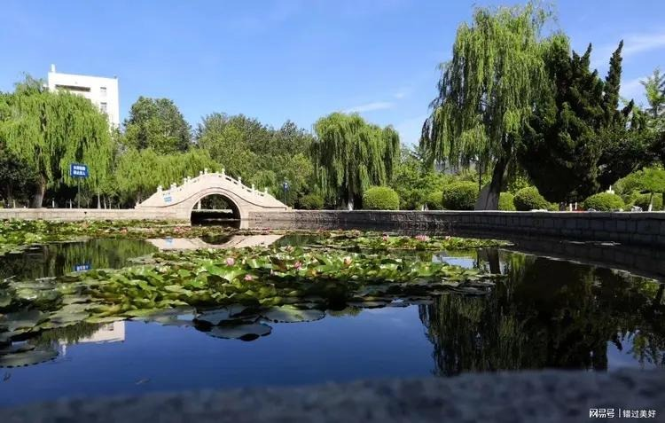
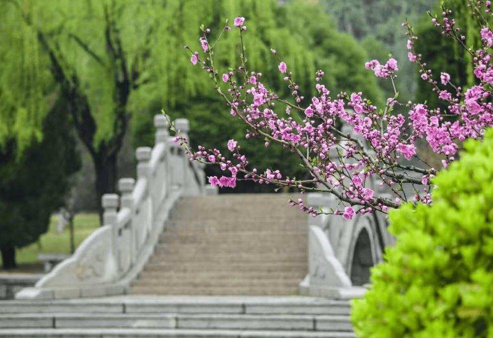
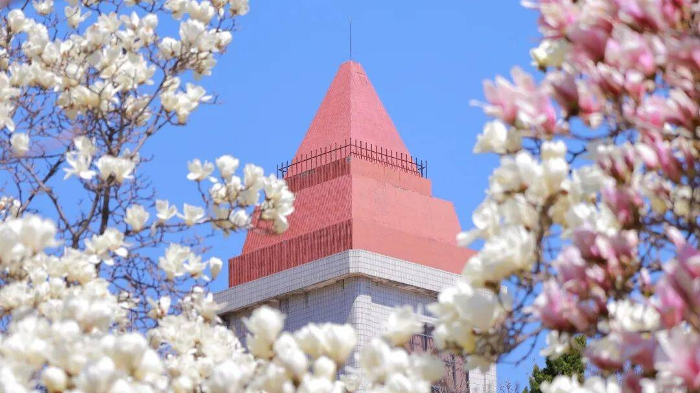

鲁东大学坐落在中国现代海洋工程发源地——烟台，是一所工科为主、工农理文多学
科协调发展的综合性应用型大学，拥有水利环境海洋、集成电路与芯片制造、食品药品与现代农业、教师教育、文
化传承创新传播等5个优势学科群，海上航天发射母港与平台、滨海核电冷源安全与绿色海工、跨海通道规划与设
计、海洋水产养殖新品种培育、食药用菌新品种选育、汉语辞书编纂与文学创
作、北太平洋区域国别等科学研究和人才培养特色鲜明，系国家高等学校学科创新引智基地（111计划）立项建设
单位、博士后科研流动站设站单位、服务国家特殊需求博士人才培养项目单位、中国政府奖学金来华留学生接收院
校、教育部国别和区域研究高水平建设单位、全国创新创业典型经验高校、全
国高校实践育人创新创业基地、山东省应用型本科高校建设单位、山东省“双高”建设高校，以其“严谨、精益、卓
越”的质量文化和“响应、更新、融合、服务”的发展理念引领了胶东半岛的进步与繁荣，在山东省属本科高校高质
量发展绩效考核中连年获评“优秀”等次，精准服务山东现代化强省建设工作经验入选全省高等教育类综合改革和制
度创新十大典型案例。
鲁东大学坐落于烟台芝罘区的青山环抱间，三面依山、水系错落
，将自然野趣与人文景致完美融合，四季风光各有韵味，堪称一座天然的生态园林。
春日的鲁大是花与绿的盛宴。北区生化楼前的牡丹园率先开启盛景，9 大色系近百个品种的四千余株牡丹次第绽放，艳红似火、粉娇若霞、
洁白如玉，引得蜂蝶翩跹，成为师生与市民打卡的胜地。红顶楼畔，玉兰花与早樱相映成趣，绯红与莹白交织，春风拂过，花瓣轻舞。镜心湖
的垂柳抽出新芽，枝条轻拂水面，石拱桥倒映湖中，与初绽的睡莲构成一幅清新雅致的春日图。
盛夏时节，校园是清凉的绿海。镜心湖荷花满塘，荷叶层层叠叠，粉白的荷花亭亭玉立，荷香随风漫过湖畔小径。乳子
湖更为静谧开阔，木栈道蜿蜒，朱红凉亭点缀其间，湖水倒映着蓁山的浓绿与蓝天白云，偶有白鹭掠过水面，漾起圈圈涟
漪。林间浓荫蔽日，蝉鸣阵阵，是师生避暑读书的好去处。
金秋的鲁大被染上温暖的色调。银杏叶泛黄，铺满校园的小径，阳光穿过枝叶洒下斑驳的光影。
镜心湖与乳子湖的水面愈发澄澈，岸边的枫树、槭树换上红装，色彩浓烈如
油画。后山的果树挂满果实，秋风吹过，落叶轻舞，为校园增添了几
分静谧与诗意。镜心湖与乳子湖的水面愈发澄澈，岸边的枫树、槭树换上红装，色彩浓烈，宛如一幅油画。后山的果树缀满果实，秋风掠过
，落叶轻舞飞扬，为校园平添几分静谧与诗意。
冬日的鲁大则尽显素雅。一场大雪过后，红顶楼的红瓦覆上白雪，红白相映，格外醒目。镜心湖的石桥银装素裹，湖面偶结薄冰，挺拔的水杉枝干挂满
冰晶。乳子湖静谧无声，远山如黛，白雪覆盖的草坪与树林，共同勾勒出一幅宁静纯洁的冬日雪景图。
除了四季流转的自然之美，鲁大的风光更蕴藏着深厚的人文底蕴。镜心湖寓意涤尘静心，乳子湖承载着人与自然和谐共生的理念。依山而建的校园道
路，让每一次漫步都能邂逅别样景致。鸟鸣、花香、湖光、山色，交织成鲁东大学独有的生态画卷，也成为无数师生心中难以忘怀的青春印记。


